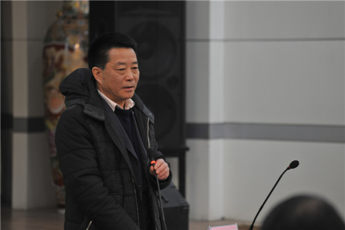
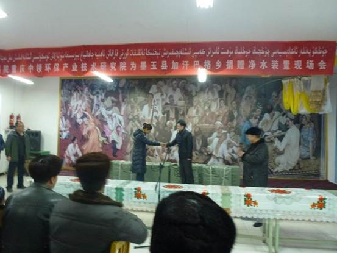
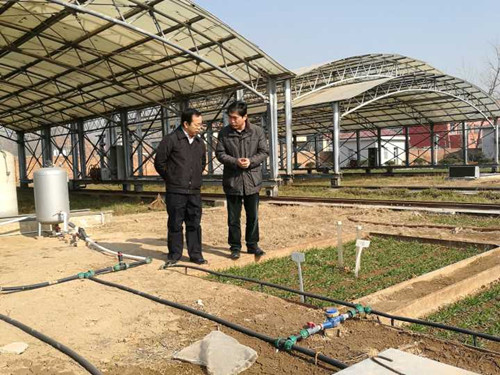
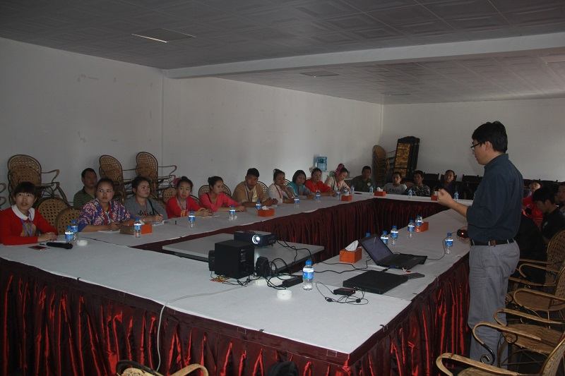
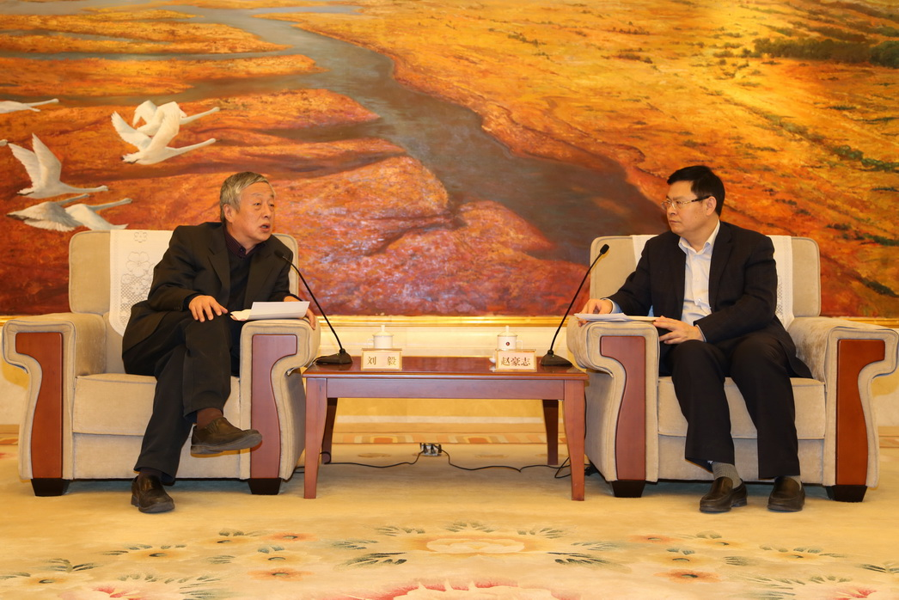

中科院植物研究所杨春虹研究员来新疆生地 所开展学术交流

新疆生地所召开三届五次职工代表暨 2016年度总结表彰大会

新疆生地所与重庆绿色智能技术研究院携手 助力新疆和田地区饮水安全公益事业

真情暖群众，笑迎和谐春— 新疆生地所领导班子春节开展走访慰问

版纳站陈辉副站长与科普部刘光裕应邀给望天树景区工作人员进行科普教育
浙江农林大学与长武站开展果园施肥新技术试验研究
农田灌溉研究所党委书记陆建中到商丘站慰问
沈阳站温室大棚修缮完成